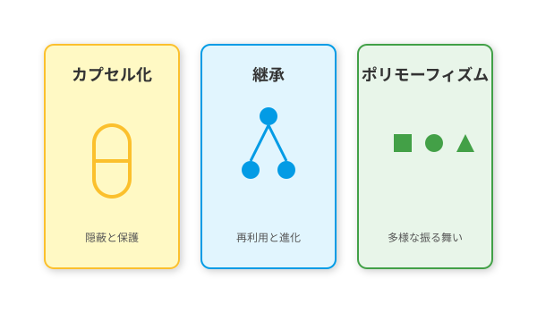

2.1 オブジェクト指向という魔法の源
導入: 世界を再構築する思想
第1章では「要求」という未知の領域を探検し、地図を描きました。これからは、その地図の上に城を築く「設計」のフェーズに入ります。
しかし、いきなり柱を立て始める前に、私たちが使う「建材」と「工法」について知る必要があります。現代のソフトウェア・アルケミーにおいて、最も基本的かつ強力な思想——それがオブジェクト指向（Object-Oriented Programming: OOP）です。
手続き型の迷宮 vs オブジェクト指向の秩序
オブジェクト指向以前の世界（手続き型プログラミング）では、データ（魔力）と処理（呪文）はバラバラに管理されていました。「勇者のHP」という変数がどこかにあり、「勇者を攻撃する関数」が別の場所にありました。規模が大きくなると、どこで誰のHPが減らされたのか追うのが難しくなり、世界はまるで出口のない迷宮のように複雑になっていきました。
オブジェクト指向は、この問題を解決するために生まれた「世界を再構築する魔法」です。 複雑な現実世界を「モノ（Object）」の集まりとして捉え直します。「勇者」というオブジェクトの中に「HP（データ）」と「戦う（処理）」をセットにして持たせるのです。
モノと役割の物語
オブジェクト指向の世界では、すべてのオブジェクトが「自律」しています。 彼らは自分の状態を自分で管理し、互いにメッセージ（依頼）を送り合うことでシステム全体を動かします。神様（メイン関数）がすべてを細かく操作するのではなく、登場人物たちがそれぞれの役割（Role）を果たしながら協調して物語を紡ぐ——それがオブジェクト指向の本質です。
このセクションでは、この魅力的な世界を支える「3つの魔法石」——カプセル化、継承、ポリモーフィズムについて学びます。これらを理解することで、あなたのコードは単なる命令の羅列から、生命を持った有機的なシステムへと進化します。

0. クラスとインスタンス：設計図と実体
オブジェクト指向を語る上で避けて通れないのが、「クラス」と「インスタンス」の関係です。
- クラス（Class）: 魔法のレシピ、あるいは設計図。「勇者とはこういうものだ」という定義です。実体はないので、これだけでは戦えません。
- インスタンス（Instance）: レシピから具現化された実体。「勇者アリス」や「勇者ボブ」など、実際にHPを持ち、戦うことができる存在です。
私たちアーキテクト（設計者）の仕事は、美しい「クラス」を書くことです。そして、実行時にそのクラスから無数の「インスタンス」が生まれ、世界を動き回るのです。
1. カプセル化：魔力の隠蔽
[図: カプセル化—内部状態と公開インターフェース]
概要
カプセル化（Encapsulation）とは、データ（魔力）とそれを操作する手続き（呪文）を一つの「カプセル」に閉じ込め、外部から不用意に触らせないようにする技術です。
冒険でのたとえ
「伝説の魔剣」を想像してください。 使い手は、剣の柄を握って振る（インターフェース）だけで、強力な炎を放つことができます。剣の内部でどのような魔力回路が動いているか（内部実装）を知る必要はありません。また、剣の核（データ）に直接触れて壊してしまうリスクもありません。
コードでの表現
class MagicSword:
def __init__(self):
self._power = 100 # 内部の魔力（外部からは隠されている）
def attack(self):
# 外部には「攻撃する」という方法だけを見せる
self._consume_power()
print("炎の斬撃！")
def _consume_power(self):
# 内部でのみ使われる処理
self._power -= 102. 継承：力の継承と進化
概要
継承（Inheritance）とは、あるクラス（親）の性質を受け継ぎ、新しいクラス（子）を作る技術です。コードの再利用性を高め、階層構造を作ります。
冒険でのたとえ
「モンスター」という基本種族がいるとします。 そこから「ドラゴン」や「ゴブリン」が派生します。彼らは皆「HPを持つ」「攻撃する」というモンスターとしての共通の性質（親の力）を受け継ぎつつ、ドラゴンなら「火を吐く」、ゴブリンなら「盗む」といった独自の能力（子の力）を追加で持っています。
コードでの表現
class Monster:
def attack(self):
print("攻撃した！")
class Dragon(Monster): # Monsterの力を継承
def breath(self): # 独自の能力を追加
print("火を吐いた！")3. ポリモーフィズム：多態性の輝き
概要
ポリモーフィズム（Polymorphism）とは、同じ「命令」に対して、受け取り手によって異なる「振る舞い」をする性質です。日本語では「多態性」と呼ばれます。
冒険でのたとえ
ギルドマスターが「総員、攻撃せよ！」と号令をかけたとします。
- 剣士は「剣を振るう」
- 魔法使いは「杖を掲げる」
- 僧侶は「祈りを捧げる」
号令（インターフェース）は一つですが、実際の行動（実装）はそれぞれの職業（クラス）によって異なります。これにより、ギルドマスターは個々の職業の詳細を知らなくても、全員を指揮することができます。
コードでの表現
def guild_attack(members):
for member in members:
member.attack() # 全員に同じ「攻撃せよ」という命令
# 実行時
# memberが剣士なら斬撃、魔法使いなら魔法が発動するAI時代のアプローチ: 役割分担の相談役
オブジェクト指向設計の難しさは、「誰にどの役割を持たせるか」を決めることにあります。ここでAIが強力なパートナーになります。
責務の提案
AIに「この機能を実現するために、どのようなクラス構成にすべきか？」と問いかけてみてください。AIは、驚くほど的確に「モノ」と「役割」を提案してくれます。
ポリモーフィズムの発見
「この if 文の羅列、ポリモーフィズムを使ってもっときれいに書けない？」と相談すれば、AIはすぐに共通のインターフェースを定義し、美しいクラス構造へとリファクタリングしてくれます。
ハンズオン: 小さな世界を創造する
ステップ1: クラスを定義する
「動物（Animal）」クラスを作り、speak（鳴く）というメソッドを持たせましょう。
ステップ2: 継承で種族を作る
「犬（Dog）」と「猫（Cat）」クラスを作り、Animalを継承させます。それぞれの speak メソッドで「ワン」「ニャー」と表示するようにオーバーライド（上書き）してください。
ステップ3: 多態性を体験する
Animalのリストを作り、ループで回しながら speak を呼び出してみましょう。コードは同じでも、振る舞いが変わることを確認してください。
さらに学ぶためのリソース
古のグリモワール（推薦図書）
- 📚 マット・ワイスフェルド『オブジェクト指向の思考プロセス』: 言語に依存せず、オブジェクト指向の「考え方」を学べる良書。
- 📚 エリック・フリーマン他『Head Firstオブジェクト指向分析設計』: ストーリー形式で楽しく学べる入門書。
まとめ
オブジェクト指向は、システムに秩序と柔軟性を与えるための基盤です。
- カプセル化で、複雑さを隠蔽し、安全に使う。
- 継承で、共通点をまとめ、進化の系譜を作る。
- ポリモーフィズムで、詳細を気にせず、統一的に扱う。
これらの概念は、次節以降で学ぶUML（2.2節）やSOLID原則（2.3節）を理解するための「共通言語」となります。さあ、この強力な魔法の源を手に入れた私たちは、いよいよ設計図を描く準備が整いました。
さらに学ぶためのリソース
- 📚 書籍: 結城浩『Java言語で学ぶデザインパターン入門 第3版』（Javaベースですが、オブジェクト指向の基礎が非常に丁寧に解説されています）
- 📚 書籍: 谷本心『Java本格入門』（オブジェクト指向の設計思想を深く理解するための現代的なガイド）
- 📄 論文: Alan Kay "The Early History of Smalltalk"（オブジェクト指向の生みの親による、その思想の原点）
AIへの詠唱例
Pythonを使って、カプセル化、継承、ポリモーフィズムの3大要素を示す簡単なRPGのコード例を書いてください。オブジェクト指向の「ポリモーフィズム」について、小学生でもわかるように「動物の鳴き声」を使って説明してください。